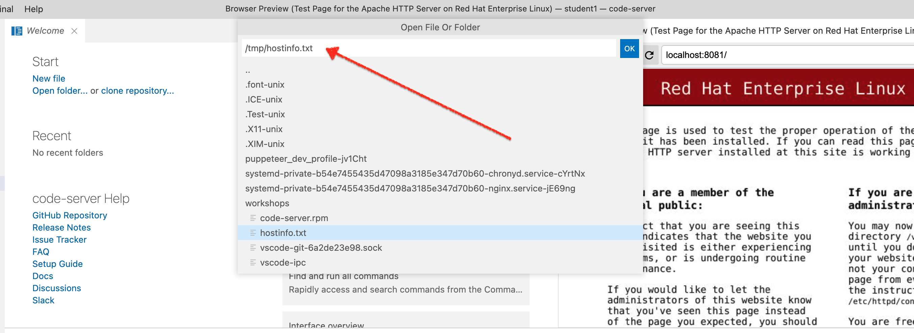
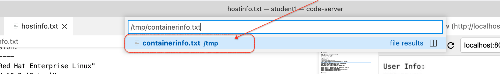
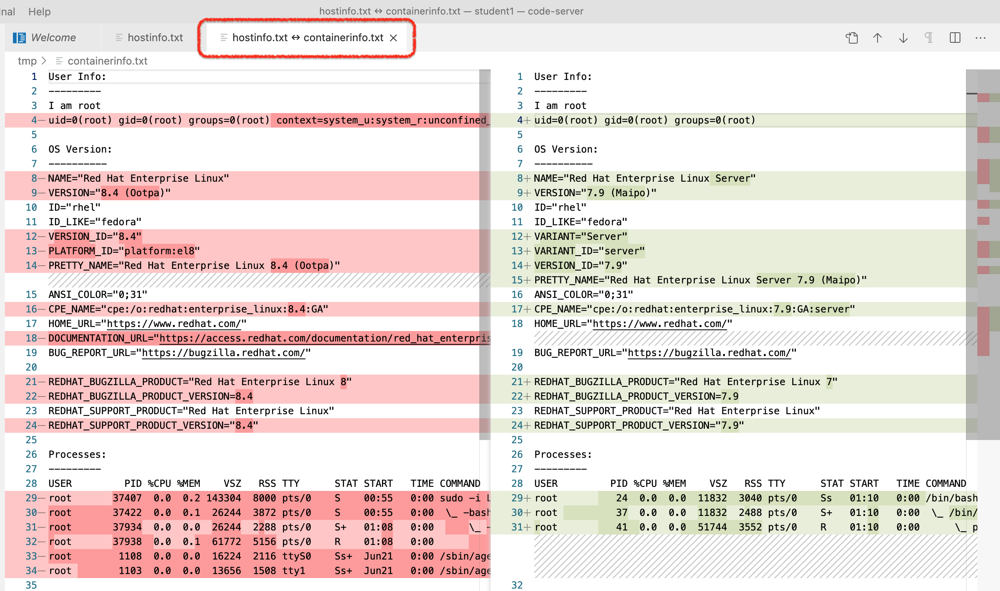
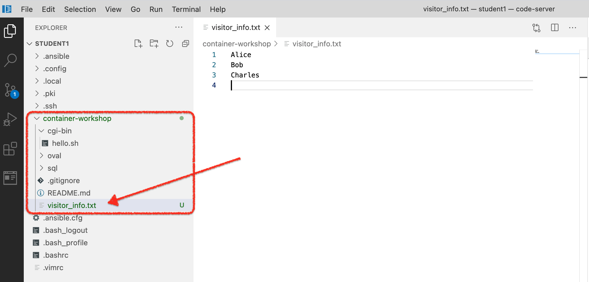

Running your First Container with Podman
20 MINUTE EXERCISE
In this exercise we’re going to use Podman to download and run a container that will run a local Apache webserver on your VM.

1. Add a website by running a container
-
First let’s prove that Apache is not currently running on your local VM.
-
In your Local Browser, navigate to
localhost:8081, which instructs the browser to connect to port 8081 of your local instance -
You should find that there is nothing there but a blank screen

Now we’re going to use podman to quickly create a running website on this instance!
|
At this point we’re going to be using our code-server Terminal to issue a number of commands. If you’re unfamiliar how to access the code-server terminal, see this section here |
-
Login as
rooton your instance by running the following command in the code-server Terminal:sudo -i -
You should now see the terminal prompt change to
#indicating that you are nowroot[root@ansible-1 ~]#Some of you with a security background are probably fairly uncomfortable with this. Don’t worry: there’s a method to our madness! While you might feel an aversion to running commands as the
rootuser on the instance, it’s worth pointing out that any socket-based container runtimes (such asDocker) require some sort of root access to operate -
From inside the terminal, run the following command (see the footnotes for the breakdown of the different elements of the command):
podman run \(1) --privileged \(2) -d \(3) -p 8081:80/tcp \(4) --name my-web-server \(5) quay.io/bfarr/container-workshop-httpd:0.0.6 (6)1 The podmancommand has a number of subcommands.runindicates that we want to run a given container image2 The --privilegedflag, as we’ll come to see, could be problematic. It allows the container to run with an extended set of capabilities that might otherwise be reserved for the host (such as accessing ports < 1024). However, when running some processes in a container, this is sometimes required3 Run the container in "daemon" mode (i.e. in the background) 4 This indicates that we want local (i.e. the host) port 8081 forwarded to port 80 in the container 5 Whilst we can always refer to started containers by their system assigned Id, the --nameoption gives us the ability to refer to the container by a human-friendly name instead6 This is the name of the image (including the image registry where the container is normally located, in this case quay.io) that we want to run -
After the image is "pulled" you should see something like the following in the terminal which represents the id of the running container
Trying to pull quay.io/bfarr/container-workshop-httpd:0.0.6... Getting image source signatures Copying blob b5f2e1583bc1 done Copying config 68f54f9c95 done Writing manifest to image destination Storing signatures 4e9c38ac10eb38e9b8364e56aa52eb77ae09062160e61b3f20b60a5af829ba2c (1)1 This is the id of the running container. -
Compare the id there to the output of the following
podmancommand:podman ps -
You should see in the output something like the following that shows you that the container is running
NOTE: notice that the beginning of the CONTAINER ID matches the id the was output from thepodman runcommandCONTAINER ID IMAGE COMMAND CREATED STATUS PORTS NAMES 4e9c38ac10eb quay.io/bfarr/container-workshop-httpd:0.0.6 /usr/sbin/httpd -... 3 hours ago Up 3 hours ago 0.0.0.0:8081->80/tcp my-web-server
-
Finally, return to the Browser Preview panel and hit the reload button. You should see the following web page indicating that an Apache webserver is running:
 Figure 1. Test Page
Figure 1. Test Page -
Our website has more than a test page, it also has a visitor form (like straight out of the 90s!). Let’s take a look by navigating to this address (use the copy button to copy the URL and paste it into the Browser Preview panel):
-
You should see something like this:

-
Now enter a name into the
Name:field to be logged to the guestbook and press theLog to Guestbookbutton. You should now be presented a screen like this:
-
Click the
herelink highlighted above to go back and enter another name
Now that we have a container up and running, let’s poke around inside the container to get some idea of what’s going on and how containers relate to the host instance.
2. Look inside a running container
Whilst the container is running, we are able to "look inside" the container. The experience is much the same to telnet ing or ssh ing into a remote instance or virtual machine.
-
First though, let’s record what’s going on with the container’s host, namely the virtual machine that is running your code-server instance. We’ll use this to compare to what we find inside the container. Run the following command in the terminal to gather some intel about the host (and save it to a place where code-server can display it!)
cat > /tmp/hostinfo.txt <<EOF User Info: --------- I am $(whoami) $(id) OS Version: ---------- $(cat /etc/os-release | head -4) $(cat /etc/os-release | tail -4) Processes: --------- Total: $(ps -aux | wc -l) $(ps -aux --sort pid | head -6) EOF
-
Next, let’s use the VS Code editor to see what our command found out. Use CTRL+o (or CMD+o on a Mac) to show the "Open File" dialog. Type the name of the file we wrote out to in the dialog (that is
/tmp/hostinfo.txt)Figure 2. Open File Or Folder dialog
-
This should open the file in the left editor pane. The output should look something like the following
User Info: --------- I am root uid=0(root) gid=0(root) groups=0(root) context=system_u:system_r:unconfined_service_t:s0 OS Version: ---------- NAME="Red Hat Enterprise Linux" VERSION="8.4 (Ootpa)" ID="rhel" ID_LIKE="fedora" REDHAT_BUGZILLA_PRODUCT="Red Hat Enterprise Linux 8" REDHAT_BUGZILLA_PRODUCT_VERSION=8.4 REDHAT_SUPPORT_PRODUCT="Red Hat Enterprise Linux" REDHAT_SUPPORT_PRODUCT_VERSION="8.4" Processes: --------- Total: 145 USER PID %CPU %MEM VSZ RSS TTY STAT START TIME COMMAND root 1 0.0 0.4 188104 16068 ? Ss Jul21 0:06 /usr/lib/systemd/systemd --switched-root --system --deserialize 16 root 2 0.0 0.0 0 0 ? S Jul21 0:00 [kthreadd] root 3 0.0 0.0 0 0 ? I< Jul21 0:00 [rcu_gp] root 4 0.0 0.0 0 0 ? I< Jul21 0:00 [rcu_par_gp] root 6 0.0 0.0 0 0 ? I< Jul21 0:00 [kworker/0:0H-events_highpri]
-
Now let’s get into the container so that we can run the same command.
Remember how we used the
--nameoption when we ran our container? Now we can use this to indicate to podman which container we want toexecinto:podman exec \ -it \(1) my-web-server \ /bin/bash (2)1 The toption opens a "pseudo tty" to the container that allows us to seeSTDOUT(output) and theioption indicates that we want to keep theSTDINpipe open (basically allow us to continue to enter input)2 podman execinterprets any argument(s) that come after theCONTAINER ID(orCONTAINER NAME) to be the command and arguments we want to run within in the container. In this case we are running the/bin/bashcommand which is just a shell. When coupled with-itthis allows us to effectively mimicsshing into a VM
-
If you have been able to
execinto the container successfully, you should see the following in the terminal[root@4e9c38ac10eb /]# (1)1 Notice that the CONTAINER_IDappears after the@in the bash shell that we have started inside the container -
Now let’s run our command from before but this time we’re running it from "within" the container
cat > /tmp/hostinfo.txt <<EOF User Info: --------- I am $(whoami) $(id) OS Version: ---------- $(cat /etc/os-release | head -4) $(cat /etc/os-release | tail -4) Processes: --------- Total: $(ps -aux | wc -l) $(ps -aux --sort pid | head -6) EOF -
Notice that the editor window didn’t change even though we wrote the info to the same location. The difference is that the location is local to the container. That’s because the container has a filesystem that appears separate to the host
-
To make sure the file was created, run the following command to show output of the file that we just created in the container:
cat /tmp/hostinfo.txtUser Info: --------- I am root uid=0(root) gid=0(root) groups=0(root) OS Version: ---------- NAME="Red Hat Enterprise Linux Server" VERSION="7.9 (Maipo)" ... (1)1 There’s a lot more lines that have been truncated
It would be nice if we could easily compare the information we collected from inside the container with the information we collected from the host. For this, we can copy the data out of the container.
3. Copying data out of a container
Let’s see just how different the two files are by doing a diff on them. And for this we’d like to use the builtin code-server support for this. To do this we can draw on another methapor with real hosts or virtual instances, the notion of ftp ing or scp ing files.
-
First let’s "log out" of the container
exitWe’re not really logging out as much as we’re causing the process that we
podman execed to stop thus ending thepodman execcommand and returning us to the host’s terminal
-
Next, run this command to copy the file out of the container and into the tmp drive of the host instance (Those that have used
scpwill probably find the format familiar)podman cp \ my-web-server:/tmp/hostinfo.txt \(1) /tmp/containerinfo.txt (2)1 The my-web-server:<path>indicates that thepathis inside the container (i.e. container filesystem) that we named with the--nameoption at the time we issued thepodman runcommand2 This path, undecorated by a container name or id, indicates that we are referencing a path on the host (i.e. local filesystem) -
Next, lets view the files, the following command can be run in the terminal.
/usr/lib/code-server/bin/code-server -r /tmp/hostinfo.txt /tmp/containerinfo.txt
-
Now click anywhere within the left editor where the
hostinfo.txtshould still be open to give that editor focus.
-
With the
hostinfo.txtstill in focus, hit SHIFT+CTRL+p (or CMD+CTRL+p on a Mac) to open the Command Palette and start typingcompareso that you can select the commandFile: Compare Active File With…
-
Now paste
/tmp/containerinfo.txt(with you copied a few steps back) into the next dialog that pops up and press ENTER (or RETURN depending on your machine).
-
You should then see a screen like the following. Take a minute to consider the differences
If the comparison document seems to cramped, you can double-click on the tab of the comparison (circled in red in the image below) to expand the size of it out to be easier to read (e.g. it will compress the Browser Preview window to the right).
Double-click the tab again to restore it to its original size
Figure 3. Host vs. Container output of above commands
-
Some differences and similarities between the two
Table 1. Similarities and Differences between Host and Container Host
Container
OS
Linux
Linux
Distro
RHEL: version 8.4
RHEL: version 7.9
User
root(with extra SELinux context)rootNumber of Processes
Running many processes (144[1])
Running fewer processes (14[2])
Init Process (
pid 1)systemdhttpd -
Finally, let’s look at our guestbook visitor log in VSCode by copying the visitor guestbook to our local VM
podman cp \ my-web-server:/var/log/www/visitor_info.txt \ /home/%USER%/container-workshop (1)1 This is a path on your local VM to the container-workshop directory you see in the Explorer
-
You should now see the file appear in your Explorer. Click on it to view the contents. It should match the visitors that you entered previously
 -
Having looked at the contents of
visitor_info.txtlet’s delete our copy from off the host by right-clicking on it in the Explorer and selectingDelete Permanently
4. Stopping the Container (and Apache server)
Before we continue, let’s stop the container that is running in the background (thanks to the -d flag)
-
Let’s stop the container
podman stop my-web-server (1)1 my-web-serveris the name we gave the container (with the--nameoption) when we started it
-
If you were successful in stopping the container, you should see the following output:
4e9c38ac10eb38e9b8364e56aa52eb77ae09062160e61b3f20b60a5af829ba2c(1)1 This will match the CONTAINER IDof any running container that was stopped
-
Confirm that the container is stopped by hitting refresh in the Browser Preview. You should again see a blank page as there is not longer anything listening on port 8081
-
We can also see that the container is no longer listed when we run
podman pspodman psCONTAINER ID IMAGE COMMAND CREATED STATUS PORTS NAMES
5. Committing Containers to Images
Even though our container is stopped, it’s still around! You might wonder why we would want to keep a container around even after we have stopped it. Turns out it has to do with the fact that we might want to create a new image from the container we’ve just run.
Containers are by their nature immutable. While they are running, however, changes are being made to their file systems. When containers are stopped, we might want to commit those changes that were made to the filesystem whilst running.
|
For those from an operations background, it’s a little like creating an image snapshot from a Virtual Machine when its stopped. That image can then be used to boot up a different VM in a desired state quickly. |
With podman the command is commit. Let’s issue the command now; we’ll see some of the value in it a little later on in the lab.
-
First let’s find the stopped container using this variant of the
podman pscommand:podman ps -a (1)1 The -astands for "all" which means "show containers regardless of state"4e9c38ac10eb quay.io/bfarr/container-workshop-httpd:0.0.6 /usr/sbin/httpd -... 10 minutes ago Exited (0) 2 minutes ago 0.0.0.0:8081->80/tcp my-web-server
-
As we can see from the output, the container has been exited and is just waiting there in the state it was in when it was stopped (2 minutes ago according to the output above)
-
Now let’s create an image from that container by committing it:
podman commit \ my-web-server \(1) container-workshop-commit (2)1 This is the name of the container that we have stopped. This could also be done by CONTAINER ID2 This is the name that we want to give the container image. We can then treat this like any other container image For more info on committing container state, see the podman documentation
-
This should yield output similar to the following:
Getting image source signatures Copying blob 123257361dae skipped: already exists Copying blob c9e02f9d3afe skipped: already exists Copying blob add30eb35c17 skipped: already exists Copying blob 9fdb6895bb7a skipped: already exists Copying blob 6ad7f3f9e262 skipped: already exists Copying blob 8dd6e0f9b8eb skipped: already exists Copying blob fef0b05fc9cf skipped: already exists Copying blob dfe69afd0646 skipped: already exists Copying blob d0081b948274 skipped: already exists Copying blob c1c363c15e6e skipped: already exists Copying blob 6731153d32fc skipped: already exists Copying blob a22151f998a3 done Copying config f154f395c5 done Writing manifest to image destination Storing signatures f154f395c55ed7192f180502495b96cb3c223d9ce50273cda41bb63e272be7d8 (1)1 This is the id of the image that has just been created as a result of the commitcommand
-
And now let’s see what images are available by issuing the following command to show all the images we podman knows about locally:
podman images
-
The command should yield output that looks something like the following
REPOSITORY TAG IMAGE ID CREATED SIZE localhost/container-workshop-commit latest f154f395c55e 3 minutes ago 265 MB (1) quay.io/bfarr/container-workshop-httpd 0.0.6 ec71626c6cd3 3 hours ago 265 MB1 Notice that the image that we committed automatically gets a localhostappended to it since we didn’t nominate a registry. Also notice that theIMAGE IDis the abbreviated form of the id that was reported as a result of thecommitcommand
6. Removing Containers
Having looked at the images on our system, let’s turn our attention back to the containers that are running (or more accurately in our case, stopped)
-
To really tidy things up we need to tell
podmanto remove the container. Issue this command:podman rm my-web-server4e9c38ac10eb38e9b8364e56aa52eb77ae09062160e61b3f20b60a5af829ba2c(1)1 As with podman stop, this will match theCONTAINER IDof any running container that was removed as a result of the commandAs with the other
podmancommands, it’s possible to remove containers by container id.podman rm {CONTAINER_ID}
-
And now finally we can prove that the container is gone:
podman ps -aCONTAINER ID IMAGE COMMAND CREATED STATUS PORTS NAMES
7. "Re-running" Containers
Let’s say we want to take a look at our visitor_info.txt file that we copied out of the container and have since deleted from the host. Let’s start up our container to try to do that again
-
Execute the following command (which should be familar from earlier in this section)
podman run \ --privileged \ -d \ -p 8081:80/tcp \ --name my-web-server \ quay.io/bfarr/container-workshop-httpd:0.0.6
-
Now attempt let’s attempt to copy visitor_info.txt out of the container again
podman cp \ my-web-server:/var/log/www/visitor_info.txt \ /home/%USER%/container-workshop (1)1 This is a path on your local VM to the container-workshop directory you see in the Explorer
-
But you’ll get an error message. There is no visitor_info.txt in this container!
Error: "/var/log/www/visitor_info.txt" could not be found on container my-web-server: No such file or directory
Before we through our hands up in disgust, remember that we had the foresight of committing our previously running web server container to a new image called container-workshop-commit. This image should container all the changes we made on top of the my-web-server that we just ran and allow us access to the info that does not exist in the quay.io/bfarr/container-workshop-httpd:0.0.6.
-
Let’s stop and remove the current
quay.io/bfarr/container-workshop-httpd:0.0.6image based web serverpodman stop -a (1) podman rm -a1 In both cases the -aindicates that we want tostopandrm(respectively) all containers
-
Next, let’s re-run our webserver, but this time from the image we created when we committed it from our first instance of
my-web-server:podman run \ --privileged \ -d \ -p 8081:80/tcp \ --name my-web-server \ localhost/container-workshop-commit (1)1 We append localhostonto any image name that we didn’t explicitly provide a registry (e.g.quay.io) for
-
With our committed container running, let’s attempt to restore our
visitor_info.txtby pulling it out of the container running based on the committed image by issuing the same command as beforepodman cp \ my-web-server:/var/log/www/visitor_info.txt \ /home/%USER%/container-workshop (1)1 This is a path on your local VM to the container-workshop directory you see in the Explorer
-
Now our visitor info should be restored to the way it was when we last stopped the container (as verified by opening it in code-server)
Figure 4.visitor_info.txtrestored
But what good are containers if we can never persist changes we’ve made with them without all this stopping and committing them? Let’s look to the next section to see if there is something else that can be done.